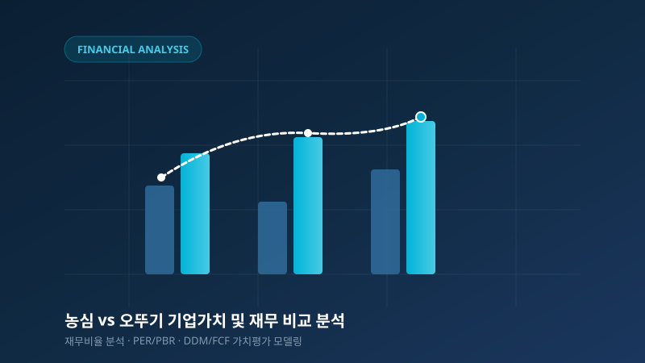
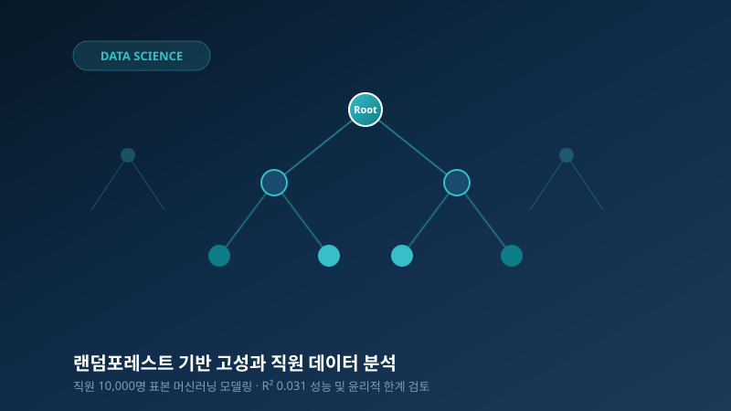
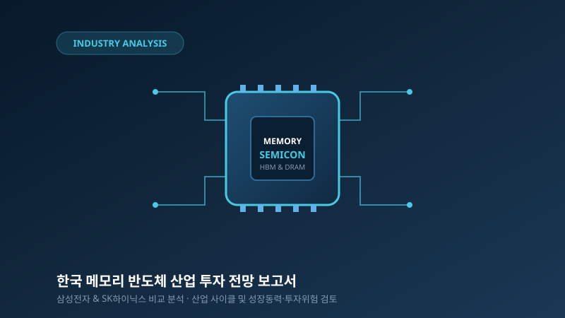
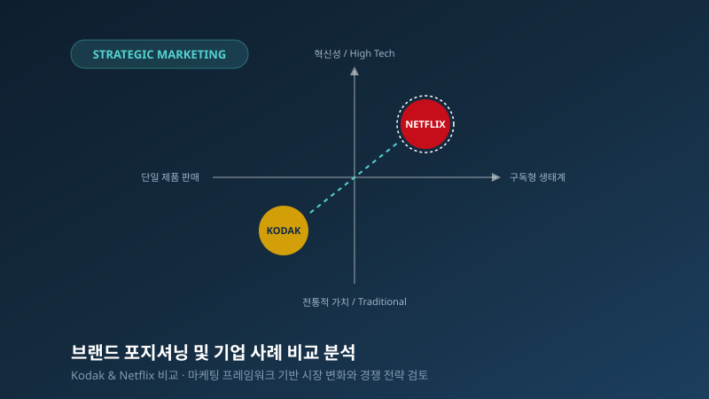

👤 기본 인적 사항
- 이름 정윤수 (Jung Youn-Soo)
- 소속 한림대학교 경영대학 경영학과
- 입학연도 2021년 입학
- 학번 20213038 (공개 설정 항목)
- 관심 분야
경영과 금융에 대한 관심을 바탕으로 학업과 프로젝트를 통해 실무 역량을 키워가고 있습니다.
성실성과 논리적 사고를 바탕으로 경영·금융 분야의 실무 지식을 쌓아가고 있습니다.
“학업과 다양한 프로젝트를 통해 경영 및 금융 분야의 전문성을 키워가고 있습니다.”
일관된 학습 태도와 체계적인 일정 관리를 통해 학업과 과제를 마감 기한 내에 빈틈없이 완수합니다.
팀 프로젝트 및 과제 수행 시 맡은 역할을 철저히 이행하고 협업을 통해 시너지를 창출합니다.
단순한 직관에 의존하지 않고, 재무제표와 통계 데이터 등 객관적 근거를 바탕으로 분석하고 의사결정합니다.
한림대학교 경영학과에서 이수한 교과목과 학업 목표, 체계적인 학습 기록을 소개합니다.
한림대학교 경영학과 (2021년 입학)에서 경영학 전반의 이론적 체계와 정량적 분석 기법을 학습하고 있습니다. 기업의 재무적 건전성을 진단하는 회계학부터 시장과 소비자의 니즈를 분석하는 마케팅, 그리고 전략적 의사결정을 지원하는 데이터 분석 기법까지 폭넓게 탐구하며 경영 현장의 문제를 해결할 수 있는 기초 역량을 단단히 다지고 있습니다.
Financial Accounting
기업의 경제적 활동을 화폐 단위로 기록·측정·보고하는 재무회계의 원리와 재무제표(재무상태표, 손익계산서, 현금흐름표)의 상호 연계 구조를 학습했습니다.
Financial Management
화폐의 시간가치(TVM), 자본비용(WACC), 자본구조 이론 및 투자안의 경제성 평가 기법(NPV, IRR)과 기업가치 평가 모델을 학습했습니다.
Principles of Management
기업 조직의 경영 프로세스(계획, 조직화, 지휘, 통제)와 전략적 환경 분석 도구(SWOT, Five Forces), 지속 가능한 경영 패러다임을 이해했습니다.
Marketing Management
시장 기회 포착과 STP(시장세분화, 표적시장, 포지셔닝) 전략 수립, 4P 믹스(제품, 가격, 유통, 촉진) 설계를 통한 고객 가치 창출 방안을 분석했습니다.
기업 재무제표 분석 역량과 자본시장 메커니즘에 대한 이해도를 심화하여 정밀한 기업 분석 기반을 구축합니다.
전산회계 및 전산세무 등의 실무 지식을 단계별로 습득하고, 세법과 회계기준의 최신 개정 사항을 지속적으로 학습합니다.
실제 기업 데이터와 산업 리포트를 활용한 실전 분석 프로젝트를 지속적으로 수행하며 실무적 통찰력을 확장합니다.
학기 중 진행된 주요 과제 수행 일지와 보고서 작성 단계별 정리 기록입니다.
파이썬 및 통계 툴을 활용한 데이터 정제, 탐색적 데이터 분석(EDA), 모델링 실습 과정 기록입니다.
재무회계, 재무관리, 기업전략 수업에서 다룬 핵심 이론과 모형의 비교 정리 노트입니다.
취득 목표로 설정한 전산회계 및 컴퓨터활용능력 시험 대비 주차별 학습 진도 일지입니다.
재무 분석, 머신러닝 데이터 분석, 산업 전망, 마케팅 전략 등 실제 수행한 4가지 프로젝트입니다.

회계·재무 분석두 기업의 재무 특성과 평가 방법별 결과를 비교하고 투자 판단의 차이를 검토한 분석 프로젝트

데이터 분석직원 10,000명 데이터를 분석하고 모델 성능과 인사 판단 적용의 현실적 한계를 검토한 프로젝트

산업·투자 분석국내 메모리 반도체 산업과 삼성전자·SK하이닉스를 중심으로 투자 기회와 위험 요인을 정리한 보고서

경영·마케팅마케팅 개념을 실제 브랜드 및 기업 사례에 적용해 시장 변화와 경쟁 전략을 검토한 프로젝트
관심 직무 분야와 역량 강화를 위해 체계적으로 준비 중인 과정들을 소개합니다.
기업의 재무 흐름을 읽고 정량적 데이터를 통해 경영 전략을 지원하는 분야에 큰 흥미를 가지고 학습하고 있습니다.
※ 위 자격증은 취득 완료가 아닌 취득 준비 중인 목표 자격증입니다. 실제 취득 완료 후 확인을 거쳐 등재될 예정입니다.
이론 학습에 그치지 않고 자격증 취득과 인턴십, 실전 프로젝트를 단계별로 밟아가며 실무형 인재로 성장하고자 합니다.
프로젝트와 학업에 대한 피드백 및 교류는 언제나 환영합니다.
한림대학교 경영대학 경영학과
※ 개인정보 보호 원칙에 따라 전화번호, 주소 등 민감한 개인정보는 공개하지 않으며, 이메일 주소 등록 후 메일로 소통 가능합니다.